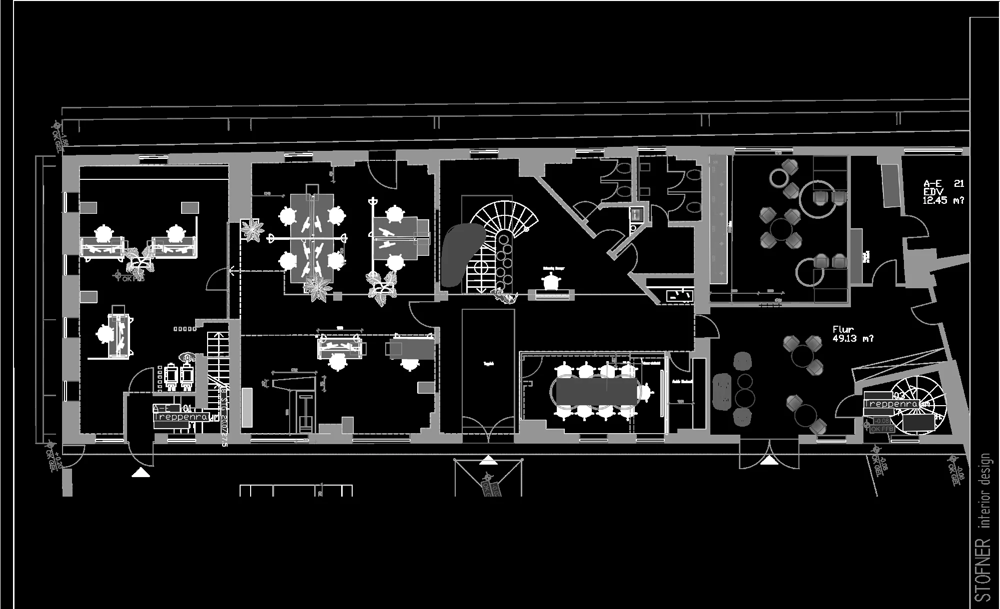

Workplace Interior
Ein Arbeitsplatzkonzept mit Fokus auf Klarheit, Konzentration und räumliche Effizienz. Bereiche für fokussiertes Arbeiten und gemeinschaftliche Nutzung werden durch eine ruhige architektonische Sprache, reduzierte Materialien und präzise Beleuchtung organisiert.

Plan / Zeichnung
Räumliche Organisation

Nächstes Projekt
Ansehen